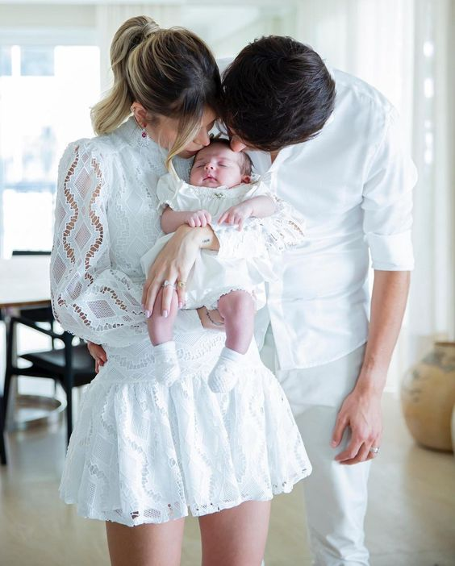
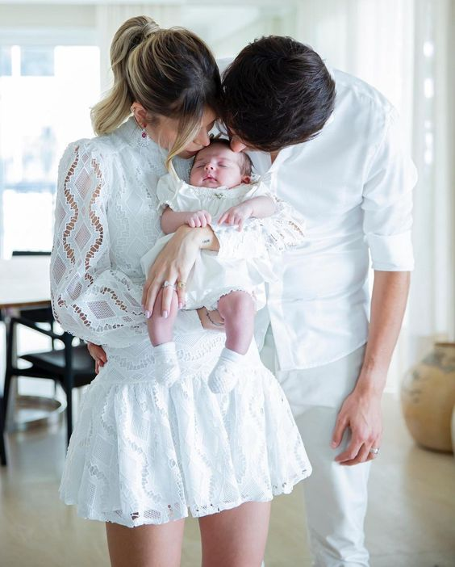
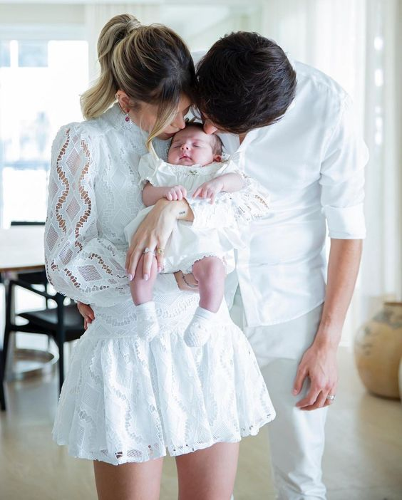

Meu Portfólio
 



Olá, meu nome é Lucas de Almeida e sou fotógrafo profissional especializado em eventos. Com mais de 10 anos de experiência, minha paixão pela fotografia começou na infância, influenciada pela minha família de artistas e pela vibrante cultura de São Paulo, minha cidade natal.
Iniciei minha carreira como assistente em um estúdio fotográfico, onde aprendi as técnicas essenciais para capturar momentos únicos. Com o tempo, fui aprimorando minhas habilidades e desenvolvendo um estilo próprio que busca contar histórias por meio de imagens.
Acredito que cada evento tem sua própria essência e minha missão é registrar esses momentos de forma autêntica e emocionante. Minha abordagem centrada no cliente e a capacidade de criar um ambiente descontraído durante as sessões resultam em fotografias que refletem as verdadeiras emoções e a atmosfera do evento.
Estou sempre em busca de novas maneiras de capturar a beleza dos eventos, seja em casamentos, aniversários ou celebrações corporativas. Cada clique é uma oportunidade de eternizar memórias e criar algo especial.
